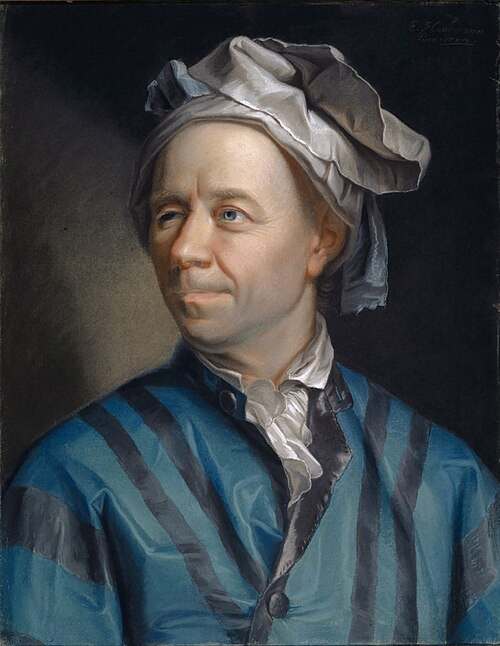

Last week every equation had zero on the right-hand side.
This week the zeros become ma and Iα, and
the method does not change.
Dynamic Analysis
Dynamic Equilibrium
State of an object which is moving with constant* (uniform) linear
and/or angular velocity. * no acceleration.
Dynamic equilibrium exists if there is a balance between the applied
forces and inertial forces for a body in motion, with all the applied
forces resulting in equal and oppositely directed inertial forces.
Therefore the same rules apply from static to dynamic equilibrium but
you need to keep in mind that the object is in motion.
Equal times, equal distances. That is the
whole test, and you can run it on any recording you have.
One stride of a real walk, five instants 0.28 s apart.
The dot is the whole-body centre of
mass.
Dynamic Analysis
When it is not in equilibrium
When an object is not in equilibrium the net
forces do not equal zero and it requires a non-equilibrium
dynamic analysis. To understand dynamic analysis we need to
start with Newton’s second law.
Dynamic Analysis
Newton’s Second Law — the law of acceleration
Linear
A net force applied to a body causes an acceleration of that
body of a magnitude proportional to the force, in the direction of the
force, and inversely proportional to the body’s mass.
ΣF = ma
Angular
A net torque (moment) applied to a body causes an angular
acceleration of that body of a magnitude proportional to the torque, in the
direction of the torque (moment), and inversely proportional to the moment
of inertia.
ΣM = Iα
Two cautions that cost marks later. The a in
F = ma is the acceleration of the centre of
mass — not of the heel, not of the joint. And the M
and the I in M = Iα must be taken about the
same axis.
Dynamic Analysis
In two dimensions
In a 2-dimensional analysis it is important to consider the components
of forces and moment(s).
This leaves us with the 3 equations of a system under
dynamic conditions.
ΣFx = max
ΣFy = may
ΣM = Iα

Jakob Emanuel Handmann, 1753
Leonhard Euler
(1707–1783) wrote the rotational law for a rigid body,
and the two laws together describe any motion of anything solid.
Hence the Newton–Euler equations, which is what
this method is called in every paper that uses it.
Three equations means three
unknowns, and not one more. Everything about how inverse dynamics
is organised follows from that one sentence.
Dynamic Analysis
Why two dimensions
Dynamic analysis of a multi-segment rigid body (like a human body) in
3-dimensions can be very complex.
We will cover 2-dimensional examples of dynamic
analysis.
In the plane a segment can do exactly three things: move
across, move up, and turn. Three degrees of freedom, three
equations — the same three from the last slide. In three
dimensions it is six of each.
This is not only a teaching simplification. A
large fraction of published gait analysis reports sagittal joint moments
computed exactly this way, because the sagittal plane is where most of
walking happens.
One shank, 90 % of the way through a measured stride.
Blue and
orange belong to the centre
of gravity; violet and
green belong to the
segment.
Dynamic Analysis
The same free body, with and without acceleration
Two directions
Forces in, motion out — or motion in, forces out.
One of them you can do to a person.
Dynamic Analysis
Forward dynamics
There are 2 approaches to solving dynamic problems
depending on what variables are known or can be manipulated.
Forward and inverse dynamics.
Forward dynamics analysis
When you know the forces and are trying to determine the
accelerations.
An example of this is in robotics where you have motors that produce a
prescribed force or torque.
That is, given the forces and torques, what are the linear and angular
accelerations?
forces → a, α → motion
Each motor is told what torque to produce. Everything the
arm then does follows from Iα.
This is the direction every physics
problem you have ever been set runs in. It is also the direction you
cannot run on a person, because nobody can tell you what
the muscle forces were.
Dynamic Analysis
Example Problem #1 (forward dynamics)
What is the acceleration if a force of 100 N is applied to an object with a mass of 10 kg?
Dynamic Analysis
Example Problem #2 (forward dynamics)
What is the acceleration if a force of 100 N and a force of 150 N are applied to a 10 kg object such that no rotation can occur — that is, both forces pass through the centre of gravity?
Dynamic Analysis
Example Problem #3 (forward dynamics)
Calculate the angular acceleration caused by the 100 N force on the segment if the moment of inertia of the segment is 0.15 kg·m².
Dynamic Analysis
Example Problem #4 (forward dynamics)
Calculate the angular acceleration caused by both the 100 N and the 200 N forces on the segment if the moment of inertia of the segment is 0.15 kg·m².
Dynamic Analysis
Simulation
Another application of forward dynamics is in the
simulation of human movement, when approximate muscle
forces are input into models to replicate the performance of a movement.
Dynamic Analysis
Inverse dynamics analysis
When you know the kinematics and are trying to solve
for the kinetics.
An example of this type of solution is when you can measure the movement
of the body segment and want to solve for the muscle force and joint
reaction forces required to produce that movement.
motion + external forces → internal forces
You cannot put a load cell inside
somebody. You can put a camera in front of them and a plate under
them — so this is the only direction available.
Everything from here on is this one calculation, and the
figure is what it must account for: ten per segment,
thirty for the limb.
Each cut carries Rx,
Ry and Mz; each segment
carries mg, max,
may, Iα and θ.
Dynamic Analysis
Example Problem #1 (inverse dynamics)
What is the resultant force applied to a 23 kg object
if the acceleration is 17.6 m/s²?
Solution
ΣFx = m·ax
F = 23(17.6)
F = 404.8 N
Dynamic Analysis
Example Problem #1 (inverse dynamics)
Calculate the moment required for an angular
acceleration of 112 rad/s², given the moment of inertia about the elbow
is 0.18 kg·m².
Solution
ΣM = I·α
M = 0.18(112)
M = 20.2 N·m
The method
Break the limb into segments, start at the one touching the
ground, and carry the answer upward.
Inverse Dynamics
Inverse dynamics in human gait analysis
We can record the movement of the human body using a motion capture
system, video camera, accelerometers, gyros, etc…
and measure the external forces,
but we do not know what is going on inside the body to
produce the motion.
Based on recorded data (motion
trajectories, GRFs) and simple dynamics principles (Newton–Euler
equations) we can reconstruct the net joint moments and
forces.
The word net is doing a great deal of work in
that sentence, and we come back to it before the end.
Inverse Dynamics
One segment at a time, starting at the bottom
Inverse dynamics involves taking into account all the forces and moments
that act on each segment, and the effect of these forces and moments on
the following segments.
For example, if we want to find out the forces and moments at the hip
during a movement we need to consider each segment
separately.
We need to start with the most distal segment and then
carry the solutions for each joint forward.
Step 1: Foot ·
Step 2: Leg ·
Step 3: Thigh
Inverse Dynamics
Why the order is forced
Inverse Dynamics
A net joint force and a net joint moment
1. We need to consider all the forces acting
upon the segment and the moments that they would produce — bone-on-bone
forces, ligament forces, every muscle crossing the joint and the joint moment
of force it produces.
2. Really we can say that we can add all these
forces to create a net joint force and a net joint
moment, and then account for the internal and external moments.
One force and one moment, at
each joint, for each segment. That replacement is exact
for the mechanics — the segment accelerates identically — and
lossy for the anatomy, because afterwards there is no way of telling which
muscle did it.
Inverse Dynamics
A really simple diagram
So let’s make a really simple diagram so we can see the
steps necessary to calculate the net joint forces and moments.
ΣFx = max
ΣFy = may
ΣM = Iα
NB. The technique for calculating
the net joint forces and moments is slightly different from the technique
we are used to. It is the same in principle, but it may feel a bit
different because we are taking moments about a different axis. Either
technique could be used, but the one I am showing you simplifies the
calculations given the number of variables.
Inverse Dynamics
The forces, in general form
If we calculate all values with reference to the
centre of mass we can use the general forms of the
Newton–Euler equations that we learned earlier.
ΣFx =
Fx-proximal +
Fx-distal =
max
ΣFy =
Fy-proximal +
Fy-distal +
mg =
may
Hover any term to find it on the diagram. And
while these are the general forms of the equations you need to keep close
attention to the directions (signs) of the forces when
calculating the values.
The forces about the distal end are the ground
reaction forces. The forces about the proximal end are
normally the unknown forces.
Inverse Dynamics
The forces, with specific values
In this example we can give specific forces.
ΣFx =
Fankle-x +
GRFx =
max
Fankle-x =
max − GRFx
ΣFy =
Fankle-y +
GRFy +
mg =
may
Fankle-y =
may − GRFy − mg
The muscle force acting at the
ankle · the ground reaction
force
Inverse Dynamics
The moments
ΣM = Iα
Mankle +
MFankle/CG +
MGRF/CG
= Iα
Mankle
+ Fankle-x · dP(sinθ)
+ Fankle-y · dP(cosθ)
+ GRFx · dD(sinθ)
+ GRFy · dD(cosθ)
= Iα
Inverse Dynamics
The same moments, with the geometry drawn
ΣM = Iα
Mankle
+ Fankle-x · dP(sinθ)
+ Fankle-y · dP(cosθ)
+ GRFx · dD(sinθ)
+ GRFy · dD(cosθ)
= Iα
dPsinθ and
dDsinθ are vertical offsets, and
they go with the horizontal forces. The arm a force turns
through is perpendicular to it.
Inverse Dynamics
Every segment carries four moments
Inverse Dynamics
Up the chain
Now that we have found the net ankle joint force and moment we
can then use that information to input into the next limb
segment.
ΣFx = max
ΣFy = may
ΣM = Iα
Same three equations, new segment. The leg’s distal end
is the ankle, and we have just finished measuring it.
The distal arrows point the other way now — that is
Newton’s third law, and it is the next slide.
Inverse Dynamics
The leg, with specific forces
In this example we can give specific forces.
ΣFx =
Fknee-x −
Fankle-x =
max(leg)
Fknee-x =
max + Fankle-x
ΣFy =
Fknee-y −
Fankle-y +
mg =
may(leg)
Fknee-y =
may + Fankle-y −
mg
Need to consider action/reaction
forces. Those minus signs are the whole content of this slide.
The muscle force acting at the
knee · the ankle reaction
force
Inverse Dynamics
The leg, with specific moments
In this example we can give specific moments.
ΣM = Iα
Mknee +
MFknee/CG +
MFankle/CG −
Mankle = Iα
Mknee = Iα
− MFknee/CG
− MFankle/CG
+ Mankle
Really just remember that what we solved for at
the ankle will affect each limb up the chain.
A moment at both ends now — the one we
want at the knee, and the one we already solved at the ankle.
Inverse Dynamics
The same free body, on a measured stride
Inverse Dynamics
Handing the ankle to the knee
Inverse Dynamics
In summary…
What do you need to remember from the last few slides? In order to
solve for joint forces and moments:
You need to know the kinematics of the movement and any
external forces.
Break up each multi-limb segment into individual limbs.
Use the Newton–Euler equations to solve for unknown
net forces and moments for each joint, starting from the most distal
segment.
Transfer forces and moments up the link of segments.
This gives you an idea of the forces and
moments experienced at each joint that result from the external forces and the
movements.
Inverse Dynamics
What inverse dynamics can and cannot tell us
What it can tell us
NET joint moments, powers and forces.
What it cannot tell us
Contributions/activations of individual muscles.
Total amount of muscle work done — it does not account for
co-contraction of muscles.
Internal bone-to-bone forces at joints.
Other assumptions and limitations
Frictionless joints.
Generalized, uniform and/or concentrated mass distribution.
Estimation of joint centre of rotation.
Measurement errors: skin and motion artifacts, temporal or spatial
misalignment between force plates and motion capture.
The worked example
The ankle and the knee during the swing phase of walking,
line by line.
Inverse Dynamics Analysis Example
What you are given
Calculate the forces and moments about the ankle and knee during
the swing phase of walking using the data below.
Foot
Leg
m (kg)
1.16
3.72
I (kg·m²)
0.00995
0.0642
ax (m/s²)
9.07
−0.03
ay (m/s²)
−6.62
−4.21
α (rad/s²)
21.63
36.9
Where did those masses come from? Winter’s
table gives the foot 1.45 % of body mass and the leg 4.65 %.
1.16 / 0.0145 = 80.0 kg. 3.72 / 0.0465 =
80.0 kg. The same person, to three figures.
The distances from each joint to each segment’s centre of
mass come from the same table. Those are the moment arms.
Inverse Dynamics Analysis Example
The foot, the two force equations
In this example we can give specific forces. In swing
there is no ground reaction force, so
Fx-distal and Fy-distal are
both zero.
ΣFx =
Fankle-x + GRFx =
max
Fankle-x =
max = (1.16 kg)(9.07 m/s²)
Fankle-x = 10.52 N
ΣFy =
Fankle-y + GRFy + mg =
may
Fankle-y =
may − mg
= (1.16)(−6.62) − (1.16)(−9.81)
Fankle-y = −7.68 + 11.38 =
3.70 N
It is very important to pay close attention to the
signs.
Inverse Dynamics Analysis Example
The foot, setting up the moment equation
ΣM = Iα
Mankle +
MFankle/CG + MGRF/CG =
Iα
Mankle
+ Fankle-x
· dP(sinθ)
+ Fankle-y
· dP(cosθ)
+ GRFx
· dD(sinθ) = 0
+ GRFy
· dD(cosθ) = 0
= Iα
Because this is during swing there are
no moments caused by the GRF. Two of the five terms
are gone before any arithmetic starts.
dPsinθ is the
0.01 m vertical offset and goes with the horizontal
force; dPcosθ is the
0.02 m horizontal one.
Inverse Dynamics Analysis Example
The foot, the ankle moment
Mankle +
Fankle-xdPx +
Fankle-ydPy = Iα
Based on the direction of the forces you
can determine whether they will cause a positive or a negative moment.
Therefore:
Mankle −
Fankle-xdPx −
Fankle-ydPy = Iα
Mankle =
Fankle-xdPx +
Fankle-ydPy + Iα
Mankle =
(10.52 N)(0.01 m) + (3.70 N)(0.02 m)
+ (0.00995 kg·m²)(21.63 rad/s²)
Mankle = 0.105 N·m
+ 0.074 N·m + 0.2152 N·m
Mankle = 0.39 N·m
This positive torque denotes an ankle
dorsiflexor moment.
Three terms, and the largest of them is
Iα — the foot is being swung, not loaded.
Inverse Dynamics Analysis Example
The leg, the two force equations
Need to consider action/reaction forces:
what we found at the ankle arrives at the leg reversed.
ΣFx = Fknee-x
− Fankle-x =
max(leg)
Fknee-x −
10.52 N = (3.72 kg)(−0.03 m/s²)
Fknee-x = 10.41 N
ΣFy = Fknee-y
− Fankle-y + mg =
may(leg)
Fknee-y −
3.70 N + (3.72)(−9.81) =
(3.72 kg)(−4.21 m/s²)
Fknee-y = −15.66 N +
3.70 N + 36.49 N
Fknee-y = 24.53 N
The muscle force acting at
the knee · the ankle
reaction force
Inverse Dynamics Analysis Example
The leg, the moment from the knee forces
First solve for the moment caused by the forces at the
knee about the CofG. x will cause a negative
moment, y will cause a positive one.
MFknee/CG = −
Fknee-xdPx +
Fknee-ydPy
MFknee/CG = −
(10.41 N)(0.129 m) +
(24.53 N)(0.142 m)
MFknee/CG =
−1.34 N·m + 3.48 N·m
MFknee/CG = 2.14 N·m
0.129 m is the vertical offset and pairs
with the horizontal force; 0.142 m is the horizontal one.
Inverse Dynamics Analysis Example
The leg, the moment from the ankle forces
Then solve for the moment caused by the
ankle forces about the CofG. x will cause a
negative moment and y will cause a positive one.
MFankle/CG = −
Fankle-xdPx +
Fankle-ydPy
MFankle/CG = −
(10.52 N)(0.169 m) +
(3.70 N)(0.185 m)
MFankle/CG =
−1.78 N·m + 0.68 N·m
MFankle/CG = −1.09 N·m
The same two rules, the other end of the segment, and a
longer pair of arms.
This positive torque denotes a knee
extensor moment.
Really just remember that what we solved for
at the ankle will affect each limb up the chain.
Four terms, and they add to
Iα — the four moments from earlier in the
lecture, with real numbers in them.
Inverse Dynamics Analysis Example
The same example, and the same method in stance
On a real stride
The same method, run on measured data, and checked
against somebody else’s answer.
On Real Data
The recording, and the table it is solved with
One stride of overground walking. A woman, 55 kg,
1.61 m, at 1.14 m/s. Markers at 60 Hz, the ground reaction force and
the centre of pressure at 960 Hz, the plate under the right foot for
the first 60 % of the cycle.
The authors published their
own joint moments for this stride, from their own
three-dimensional model — so we can do it from scratch and then
mark our own work against somebody who was not trying to agree with
us.
Lencioni et al. (2019), Scientific
Data6:309, CC BY 4.0.
Dempster’s table, as Winter
tabulates it. The two blue columns are the m and the
I in ΣF = ma and
ΣM = Iα, for all sixty-nine frames.
Segment
mass / body mass
CoM from proximal
k / length
length measured
m kg
I kg·m²
Foot
0.0145
0.500
0.475
0.145 m
0.797
0.00381
Leg
0.0465
0.433
0.302
0.385 m
2.558
0.03450
Thigh
0.1000
0.433
0.323
0.392 m
5.500
0.08817
m = (mass fraction)(55 kg);
I = m(kL)², with L off this
subject’s own markers. The foot’s
0.797 kg and
0.00381 kg·m² are the two numbers the
free body on slide 29 has been built from all along.
On Real Data
The same method, run for real
The chain from slide 18, the four moments from slide 25, all
sixty-nine frames, m and I off Dempster’s table.
On Real Data
When do you actually need the dynamics?
Slide 1 promised the only edit was zeros becoming ma
and Iα. Here is that promise measured.
Dynamic Analysis
What to take away
Dynamic analysis is static analysis with ma and
Iα on the right. The diagram, the table and the conventions
are unchanged.
Three equations means three unknowns, which is why you start at the
segment touching the ground and work upward.
Four moments act on every segment, and they add to Iα:
one at each end, and one about the centre of mass from each end’s
force.
Both the force and the moment reverse at every joint on
the way up.
Take moments about each segment’s own centre of mass, and pair
each force with the arm perpendicular to it.
A joint moment is a calculation, not a measurement, and
it is only as good as the anatomy you fed it.
Dynamic Analysis
Where this goes next
Multiply a joint moment by the joint’s angular velocity
and you get joint power — how fast that joint is
putting energy into the body or taking it out. That one multiplication turns
this lecture into the standard clinical description of walking.
And the honest limitation remains: inverse dynamics tells you
what the joint did, never which muscle did it. Getting from a net moment to
individual muscle forces needs either a measurement we cannot make, or a
forward model and an assumption about what the nervous system is trying to
optimise.